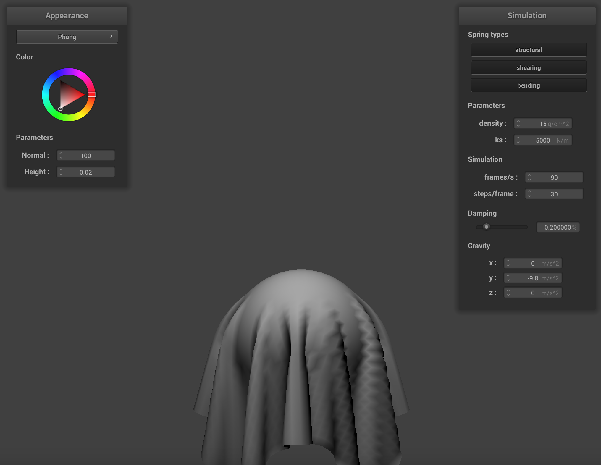

CS184/284A Spring 2025 Homework 4 Write-Up
Link to webpage: (TODO) https://cal-cs184-student.github.io/hw-webpages-ballerz-test/
Link to GitHub repository: (TODO) https://github.com/cal-cs184-student/sp25-hw4-dawgs2
Overview
I implemented a real-time simulation of cloth using a mass and spring based system. This involved implementing masses and springs, simulation via numerical integration, handling collisions with other objects, handling self-collisions, and shaders.Part 1: Masses and springs
Screenshots of scene/pinned2.json
Screenshots of Wireframe
|
|
|
|
|
|
Part 2: Simulation via numerical integration
Experimenting with Parameters
With a low ks, the cloth appears to be looser, have less tension, and sag a little more. On the other hand, with a high ks, the cloth appears to be tighter, have more tension, and it barely sags, appearing to be more rigid. The bouncing of the cloth from start to rest appears to be roughly the same. The differences between these two cases are shown in the screenshots below:
|
|
|
With a low density, the cloth appears to be tighter and barely sags. Even as the cloth falls, it barely bounces. On the other hand, with a high density, the cloth appears to be looser and it has more pronounced sagging. The cloth bounces a little more as it falls and definitely has more creases compared to clothes at lower densities. These differences are shown in the screenshots below:
|
|
|
For lower damping values, the cloth swings and bounces faster and continuously, taking a lot more time to stabilize and come to rest. On the other hand, for higher damping values, the cloth swings and bounces at a much slower speed, but it is definitely more stable and doesn’t take as much time to come to rest or oscillate. I wasn’t able to take a video, but the first screenshot with a low damping value shows the cloth swinging quickly, in motion, while the second screenshot with a high damping value shows the cloth slowly coming to rest.
|
|
|
Scene/pinned4.json
Part 3: Handling collisions with other objects
Implementation
To handle collisions with spheres, I first calculated the vector from the sphere’s origin to the pointmass. If the magnitude of this vector is less than the sphere’s radius, it means the pointmass is inside the sphere and there is a collision. I computed the tangent point as the spot on the sphere’s surface where point mass should have intersected the sphere, using tangent_point = origin + radius * origin_to_pm.unit(). This simply extends the vector from the origin to the point mass, all the way to the sphere’s surface. Then, I calculated the correction vector as the difference between the tangent point and the point mass’s last position. Finally, I updated the point mass’s new position as the correction vector, scaled by 1-friction, added to the point mass’s last position.
To handle collisions with planes, I calculated the distance from the point mass’s last position to the plane and the distance from the point mass’s current position to the plane. If they have opposite signs, it means the point mass’s last position and current position are on opposite sides of the plane, which indicates that a collision has occurred. In the case of a collision, I computed the unit vector pointing from the last position to the current position, as well as the point along this unit vector where the point crosses the plane. Then, I computed the tangent vector, or where the point mass should have intersected the plane, as pm.last_position + intersection * direction. I also calculated the correction vector as the difference between the tangent point and the point mass’s last position, but I also added SURFACE_OFFSET * normal to make sure that after the correction vector is applied to the point mass’s last position, it reaches a point slightly above the tangent point, on the same side of the plane as the point mass’s last position. Finally, I updated the point mass’s new position as the correction vector, scaled by 1-friction, added to the point mass’s last position.
Sphere.json
|
|
|
|
|
|
For smaller values of ks, the cloth sags significantly more and is wrapped more tightly around the sphere’s surface. The cloth appears to be softer, more elastic, and has more pronounced wrinkles and folds. On the other hand, for larger values of ks, the cloth sags less and barely conforms to the sphere’s surface. The cloth appears to be more rigid and stiff, with fewer wrinkles and folds. For ks = 5000, a moderate value, there is more of a balance between draping smoothly over the sphere and also maintaining its structure.
Plane.json
Part 4: Handling self-collisions
Implementation
First, I implemented the hash_position() function. This function divides the 3D space into separate 3D box volumes, with each box having dimensions w = 3*width/num_width_points, h = 3*height/num_height_points, and t = max(w,h). For the given point mass position, I use the floor() function to truncate its coordinates and compute its corresponding 3D box. Given these values for x, y, and z, I calculate its unique hash value using x*(31^2) + y*31 + z.
Next, I implemented the build_spatial_map() function, which builds a spatial map out of all the point masses. To do this, I iterated through every point mass and computed its hash position using hash_position(). If no entry existed for a hash, I initialized a new vector. Otherwise, I stored a pointer to the point mass in the corresponding bucket.
Then, I implemented the self_collide() function, which handles self-collisions for a given point mass. I started off by computing the given point mass’s hash position, then I retrieved the list of candidate point masses using the hash table (map[hash]). I iterated through each of these candidate point masses and checked if the distance between the current point mass and the candidate point mass (dist) was within 2*thickness. If so, it means a collision is detected, so I computed a correction vector as (2×thickness×unit_direction) − dist. I accumulated the correction vectors across all valid collisions, so I could scale it down by simulation_steps at the end and then divide it by the number of valid collisions to compute the average. Finally, I updated the position of the point mass by adding the average correction_vector to it, in order to resolve the collision.
Screenshots of Cloth Falling and Folding on Itself

|
Effects of Varying Density and ks
At higher densities, the cloth appears to fall slightly more quickly and it does not really maintain structure. Self-collisions are more frequent. On the other hand, at lower densities, the cloth falls more slowly and gently. It maintains shape better as it falls, there is less stretching and sagging, and also fewer self-collisions.
|
|
|
For higher values of ks, the cloth appears to be more rigid. It sags and stretches less as it follows, so it retains its original shape better and has more pronounced self-collisions. On the other hand, for lower values of ks, the cloth appears to be softer and more flexible, with more sagging and stretching. There are less pronounced self-collisions and the cloth doesn’t really maintain shape.
|
|
|
Part 5: Shaders
Shader Program and Vertex/Fragment Shaders
A shader program is a small program that runs on the GPU to control how graphics are rendered. It determines how vertices and fragments are processed, controlling qualities in the image such as lighting, shading, texture, and colors. It consists of two main components, vertex shaders and fragment shaders.
Vertex shaders apply transforms to vertices, taking in properties like the position, normal vectors, and texture coordinates, then applying transformations to determine the final position of the vertex. The vertex shader also computes varying for use in the fragment shader, and this includes information such as transformed normals or texture coordinates.
Fragment shaders process each fragment/pixel that results from rasterization. It takes in the geometric attributes of the fragment from the vertex shader, calculates lighting and textures, and considers material properties to determine the final color of each fragment/pixel.
In summary, the vertex shader processes each vertex and outputs transformed positions and additional data. After rasterization generates fragments from these outputs, the fragment shader processes each fragment and calculates its final color after taking into account lighting, textures, and material properties.
Blinn-Phong Shading Model
The Blinn-Phong shading model simulates how light interacts with surfaces in 3D. It combines three components, ambient light, diffuse lighting, and specular reflection. The ambient light represents the general illumination for the space and is calculated as ka*Ia. The diffuse lighting, which is calculated as kd*(I/r^2)*max(0,n*l), represents light that is scattered when hitting a surface. The specular reflection, which is calculated as ks*(I/r^2)*max(0,n*h)^p, simulates mirror-like reflections on glossy surfaces.|
|
|

|

|
|
|
Screenshot of Texture Mapping Shader with Custom Texture
Bump Mapping and Displacement Mapping
Bump Mapping Screenshots:
Displacement Mapping Screenshots:
Bump Mapping vs. Displacement Mapping:
Instead of modifying the geometry of the mesh, bump mapping calculates the normal vectors based on the height map, which affects how light interacts with the surface. These normal perturbations are calculated as dU = (h(u+1/w, v) − h(u, v)) ∗ kh ∗ kn and dV = (h(u, v+1/h) − h(u, v)) ∗ kh ∗ kn. This creates the illusion of depth and texture, but the shape and outline of the object remains the same. Since this method only affects shading calculations and does not modify the geometry of the mesh, it is computationally cheaper, especially at lower resolutions.
On the other hand, displacement mapping modifies the geometry of the object changing the positions of the vertices based on the height map. It calculates vertex positions using p’ = p + n * h(u, v) * kh. This results in physical changes to the object’s shape and outline. This method is more computationally expensive because it actually modifies vertex positions.
For the low resolution sphere (-o 16 -a 16), bump mapping still provides an illusion of detail, although it looks slightly blocky. For displacement mapping, the sphere has a very rough and jagged surface. On the other hand, for the high resolution sphere (-o 128 -a 128), bump mapping still provides around the same illusion of detail, but for displacement mapping, since there are more vertices to capture the height map’s details, there is a significant improvement as the sphere looks more realistic and has smoother transitions.